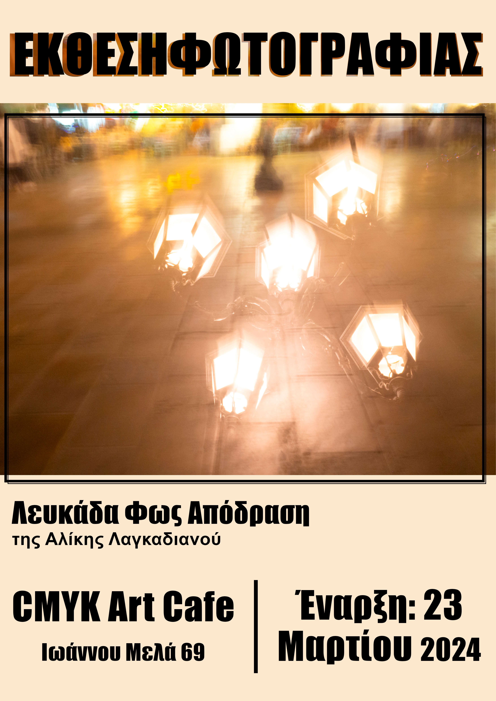

πορτφολιο
Λευκάδα, Φως, Απόδραση
Τρέχον
Συλλογή φωτογραφιών - Αποτελεί μια περιδιάβαση στον γενέθλιο τόπο της καλλιτέχνιδος μέσα από αφηρημένες φωτογραφίες, που επιχειρούν να προσδώσουν στο θέμα έναν ονειρικό χαρακτήρα. Η «κίνηση» στην εκάστοτε εικόνα έχει προκύψει μέσω συγκεκριμένης τεχνικής με την φωτογραφική μηχανή (long exposure) κατά τη διάρκεια της φωτογράφισης, χωρίς μετέπειτα ψηφιακή επεξεργασία.
Έχει παρουσιαστεί έως σήμερα σε τρεις ατομικές εκθέσεις:
Απρίλιος 2023 - Λευκάδα, Αίθουσα Τέχνης «Θεόδωρος Στάμος», υπό την αιγίδα του Πνευματικού Κέντρου του Δήμου Λευκάδας
Ιούλιος/Αύγουστος 2023 - Νιοχώρι Λευκάδας, υπό την αιγίδα του Πολιτιστικού Συλλόγου «Μελάνυδρος»
Δεκέμβριος 2023 - Αθήνα, Πολιτιστικό Κέντρο Δήμου Αθηναίων - Αίθουσα Τέχνης «ΜΕΛΙΝΑ», υπό την αιγίδα του Συλλόγου Λευκαδίων Αττικής «Η Αγία Μαύρα»
! Μέρος της έκθεσης εκτείθεται σήμερα και για περιορισμένο χρονικό διάστημα στο «CMYK Art Cafe», Ιωάννου Μελά 69, Λευκάδα 311 00.

Σχετικοί σύνδεσμοι:
> Ατομική έκθεση φωτογραφίας της Αλίκης Λαγκαδιανού
> Εγκαίνια της έκθεσης φωτογραφίας, της Αλίκης Λαγκαδιανού
> Βαρκελώνη, Λευκάδα, Ιεροσόλυμα με ένα ποδήλατο και μια κιθάρα
> Ισπανική κιθάρα και έκθεση “ΦωτόΔραση” στο Νιοχώρι
> Ατομική έκθεση φωτογραφίας της Αλίκης Λαγκαδιανού στην Αθήνα
> «Ηχώ της Λευκάδας», 220ο φύλλο